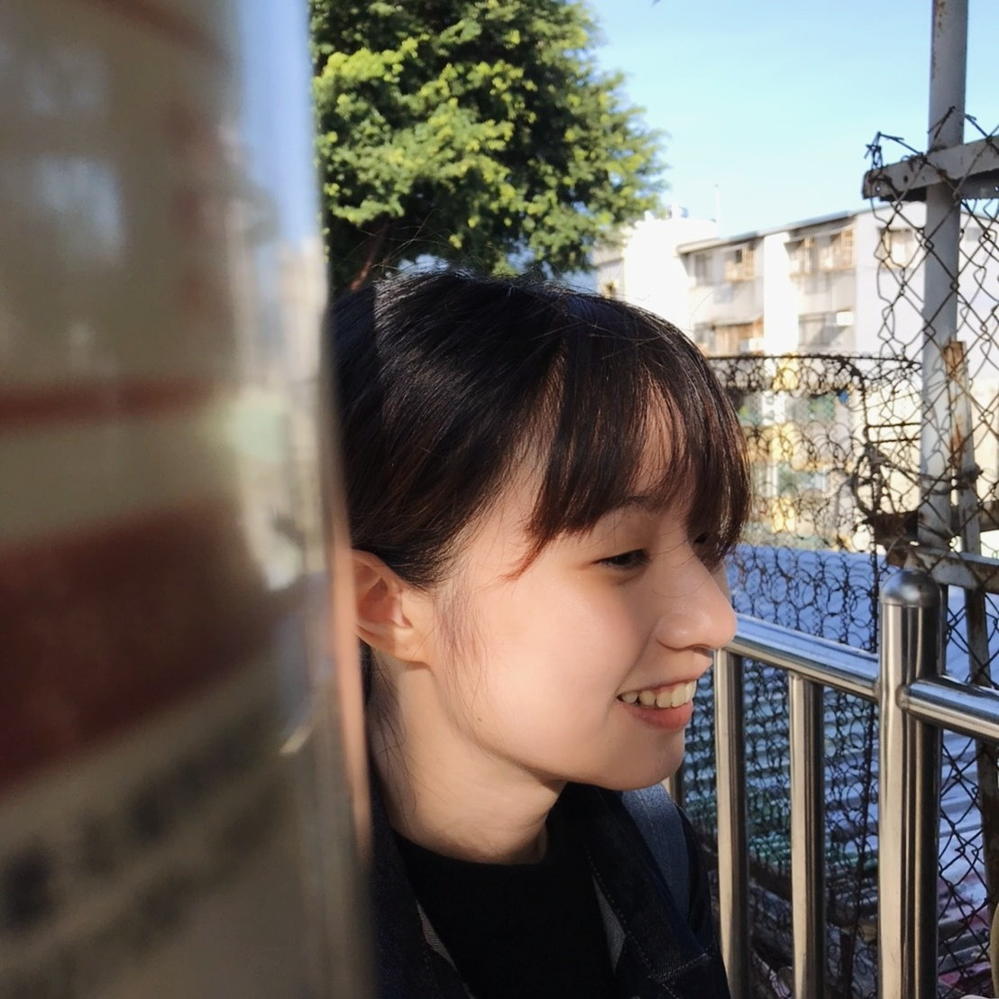

DESIGNER / TAIPEI
專注於動態影像、攝影與視覺設計，將想法轉譯為清晰、可被理解的視覺語言。

我是陳禹彤，畢業於北藝大新媒體藝術學系。2022至2023年間赴德國斯圖加特高等設計學院進行交換學程，期間專注於攝影與紀實影像創作與研究，拓展影像敘事的實作經驗。交換期間獲得臺灣教育部「學海飛颺」獎學金，以及德國巴登-符騰堡州（Baden-Württemberg）獎學金支持。具數年接案經驗，作品範疇涵蓋平面設計、影像製作與專案管理，具備整合視覺設計與影像敘事的實務能力。
行銷及設計工作經驗近三年。我以行銷思維為核心進行設計與專案執行，擅長將品牌與產品需求轉化為具體且有效的視覺溝通。具備產品攝影與影音後製背景，有助於UI與產品視覺的一致性管理，並可撰寫 HTML / CSS，具前端基礎開發能力，過去曾參與遊戲與互動程式開發過程。熟悉Adobe系列軟體與專案管理流程，具備跨行銷及設計部門，及不同領域協作經驗，熟悉與業主溝通的流程，並持續保持開放的心態，積極尋找新的合作或職涯機會。